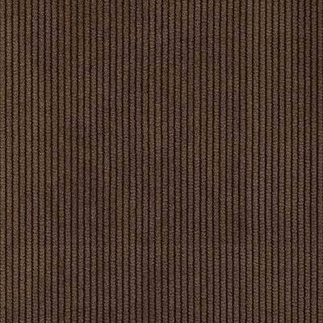
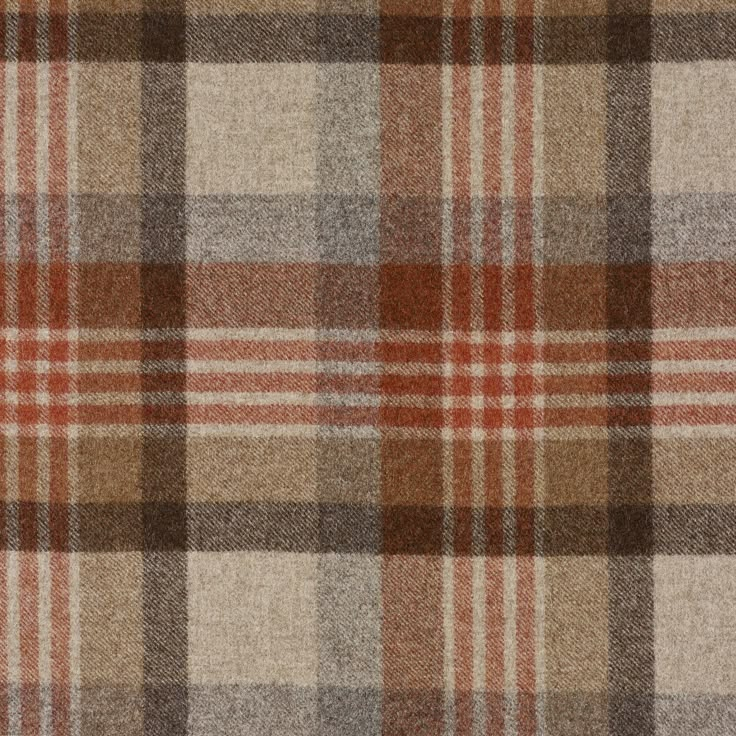
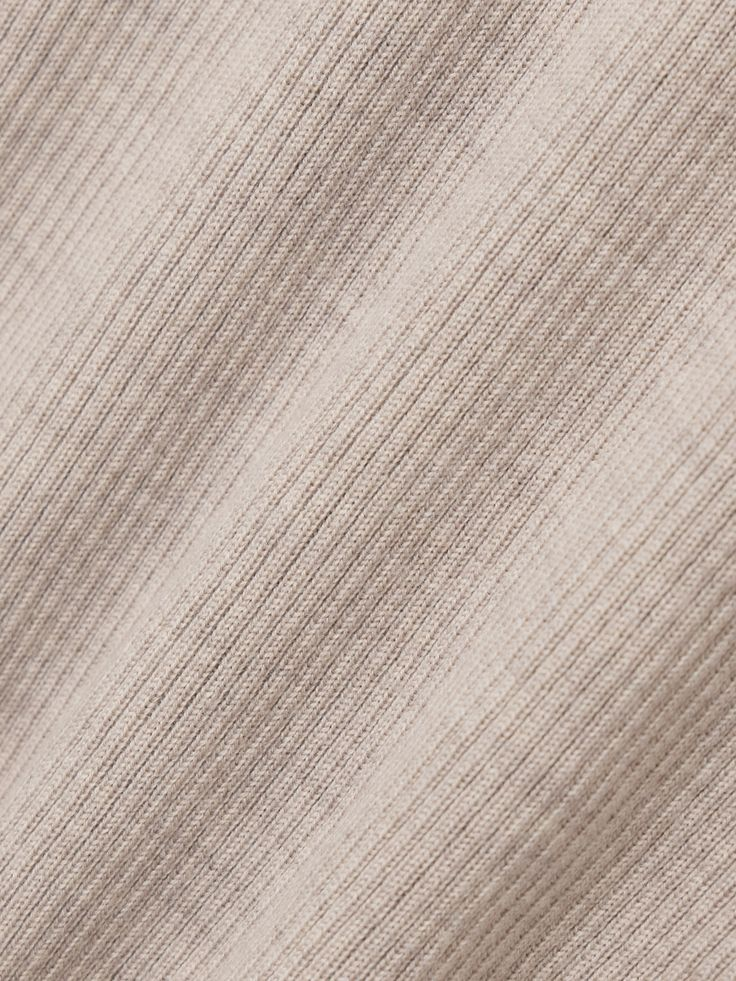
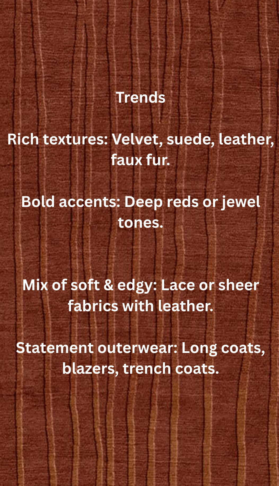
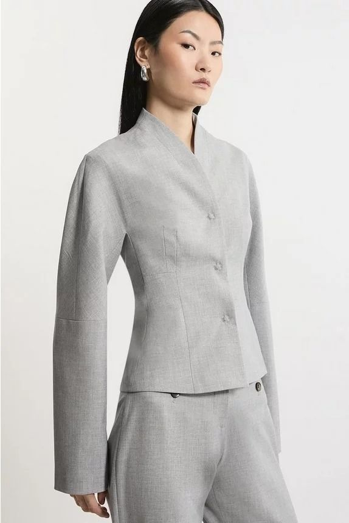
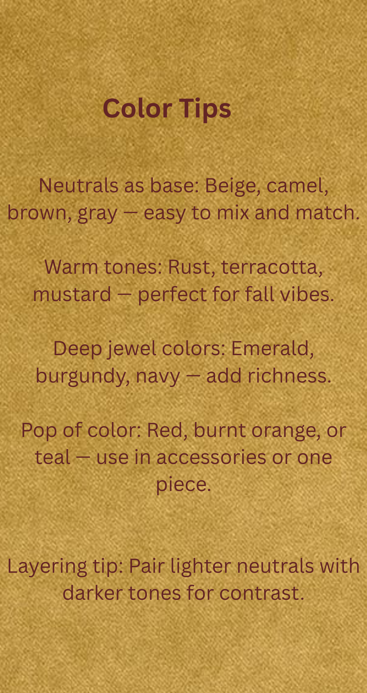

Fall Collection
Capture the essence of autumn with layered looks, earthy hues, and textured knits. Discover our outfit inspirations and seasonal fabrics for a stylish fall wardrobe.
Fall Outfits
Fall Fabrics

Corduroy – ribbed, raised vertical lines.

Wool – soft, warm, classic checked pattern.

Ribbed Knit – fine diagonal ribbed knit texture.
Suede – soft, matte, slightly fuzzy surface.



Fall Colors